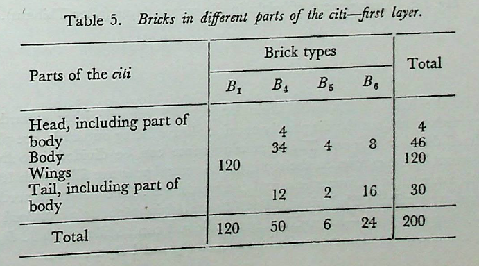
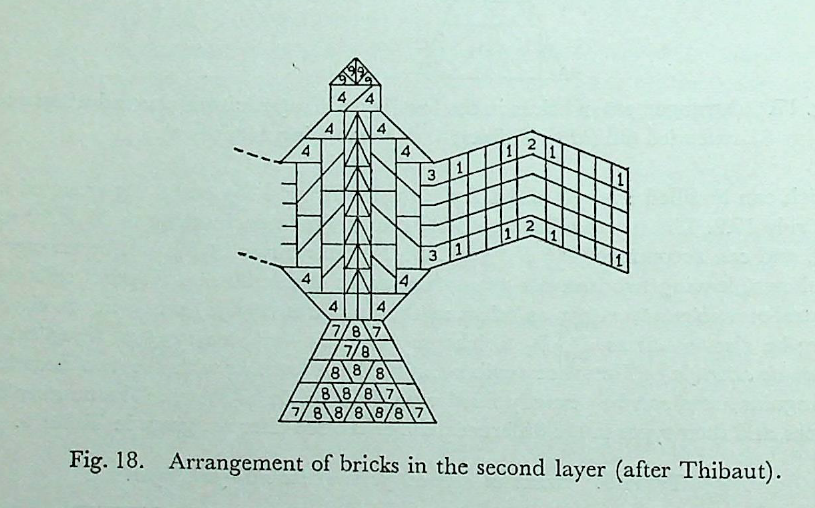
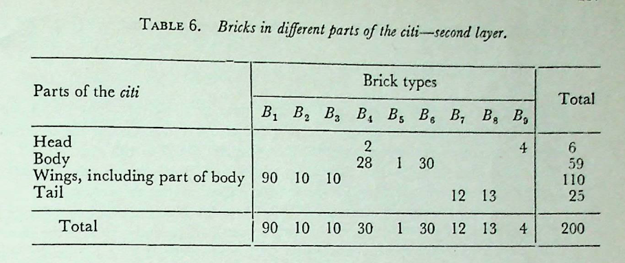

विश्वास-प्रस्तुतिः
शेषे दश चतुर्थ्यः श्रोण्यंसेषु चाष्टौ प्राचीः प्रतीचीश्च ॥ १७.१ ॥
English
The remaining space (of the tail) is covered by 10 bricks of the fourth type. 8 bricks of this type, turned towards east and west, are placed in the four corners (of the body).
मूलम्
शेषे दश चतुर्थ्यः श्रोण्यंसेषु चाष्टौ प्राचीः प्रतीचीश्च ॥ १७.१ ॥
टीका
पुच्छशेषे चतुर्थ्यो दश तिर्यगायताः । श्रोण्यंसेषु चाष्टौ श्रोण्याश्चतस्रः प्रागायताः । उत्तरस्यां दक्षिणस्यां च विपर्यस्य कारिताः । अंसयोश्वैवम् ।
विश्वास-प्रस्तुतिः
शेषे च षड्विंशतिरष्टौ षष्टयश्चतस्रः पञ्चम्यः ॥ १७.२ ॥
English
The remaining space (of the body) is covered by 26 bricks of the fourth, 8 of the sixth and 4 of the fifth type.
मूलम्
शेषे च षड्विंशतिरष्टौ षष्टयश्चतस्रः पञ्चम्यः ॥ १७.२ ॥
टीका
आत्मनि शेषे शिष्टे देशे षड्विंशतिश्चतुर्थ्यः । अष्टौ चतस्रः पञ्चम्यः । तासामुपधानमार्ग उच्यते विशयानां मार्गे तिर्यगात्मनि चतुर्दश चतुर्थ्यः । तासां पार्श्वयोर्द्वे द्वे प्राच्यौ च विपर्यस्य कारिते । उत्तरे पार्श्वे चतुर्दशानामेव पार्श्वयोर्मध्ये द्वे द्वे तिर्यक् । एताःषड्विंशतिश्चतुर्थ्य उपहिताः । चतस्रश्चतुर्भागीयाकोणेषु स्थिताः । तासु चतस्रः पञ्चम्यः तिर्यक् । षष्टयश्वाष्टौ तिर्यगेव ॥
विश्वास-प्रस्तुतिः
शिरसि चतुर्थ्यौ विशये । तयोश्च पुरस्तात्प्राच्यौ ॥ १७.३ ॥
English
In the head 2 bricks of the fourth type partly covering both (the head and the body) are placed and 2 of the same type, turned towards east, above them.
मूलम्
शिरसि चतुर्थ्यौ विशये । तयोश्च पुरस्तात्प्राच्यौ ॥ १७.३ ॥
विश्वास-प्रस्तुतिः
एष द्विशतः प्रस्तारः ॥ १७.४ ॥
English
Thus is formed the (first) layer of 200 bricks.
English
16.11-17.4. Placement of bricks in the first layer. The placement of bricks in the first layer is best explained in Fig. 17. In each wing 60 6 \(B_{1} s\). are placed, with their longer sides, 24 ang. directed towards north. There are 10 rows east-west, each accommodating 6 \(B_{4}\).
In the tail, 8 6 \(B_{6} s\). are placed on either side, in two groups each containing 4. Karavinda explains the disposition as follows-pucchāgre tisraḥ tāsām purastādekam | evamuttarasmin pārsve viparyasya kāritāḥ | At the junction between the tail and the body, 2 6 \(B_{4} s\). are placed in such a way that the portion diagonally cut lies in the body. West of them are placed 2 6 \(B_{2} s\).. The space now left in the tail consists of a rectangular strip, 30 ang. × 60 ang., followed west of it by two equal rectangular strips, each 30 ang. × 120 ang. ; 10 6 \(B_{4} s\). (2 + 4 + 4) can be placed in these three strips (17.1).
The body (atman) can be divided into three distinct rows, east-west by the lines GH, FI, EJ and LK. The breadth of each row is 60 ang. In the four corner regions, 4 equal areas EQRL, FMNG, IOPH and JSTK can be marked out such that EQ FM ΟΙ NG = PH = TK JS = 75 ang.; and RL of these four corner areas, 2 BAs can be placed, with their diagonally cut edges point- ing outwards and with their longer sides turned either towards east or west. (ātmanaḥ śronyamseșu dve dve bahyaviśeşe-Sundararāja). Still an area 30 x 30 sq. ang. is left,

Fig. 17. Arrangement of bricks in the first layer of a syenacit with curved wings and extended tail (after Thibaut). (North wing not shown).
which can be filled by 1 \(B_{5}\). and 2 \(B_{6}s\)., thus requiring 4 \(B_{5} s\). and 8 \(B_{6} s\). as stated in the rule 17.2. The rectangular area MNPO and QRTS each measures 60 × 90 sq. ang. and can accommodate 6 \(B_{4} s\). each. In the central row 14 \(B_{4}s\). can be arranged as shown, leaving two isosceles triangular spaces of side 30 ang. Kapardi calls the central row viŝayānām mārga, as bricks at the junctures (apyaya) partly lie on either side; he also confirms 14 \(B_{4}\). bricks in this row-viśayānām mārge tiryagātmani caturdaśa caturthyaḥ / The space available in the head together with the two isosceles triangular areas can be exactly filled with 4 \(B_{4}\). bricks as shown. The number of bricks and their types in the different parts of the fire-altar are given in Table 5.

Table 5. Bricks in different parts of the citi-first layer. Brick types
मूलम्
एष द्विशतः प्रस्तारः ॥ १७.४ ॥
टीका
तयोर्विशययोः पुरस्तात्प्राच्यौ चतुर्थ्यौ विपर्यस्य कारिता दक्षिणतः । एषेति । किर्मथमिदं यावता द्विशत एव? परिभाषेयम् । योऽयं प्रस्तारो द्विशत(ःस) इति परिभाष्यते । सङ्ख्यां पूरयेदित्युक्ते द्विशत एव पूर्यते । इतरथा का संख्या पूरयितव्येति न ज्ञायते । अस्ति सहस्रसंख्येति चेन्न । प्रतिप्रस्तारं पूरयेदिति वचनमनर्थङ्कं सम्पद्यते । तस्मात्परिभाषेयमिति ॥
विश्वास-प्रस्तुतिः
अपरस्मिन् प्रस्तारे पञ्चपञ्च निर्णामयोर्द्वितीयाः । अप्यययोश्च तृतीया आत्मानमष्टभागावेताः ॥ १७.५ ॥
English
In the other layer, 5 bricks of the second type are to be placed at each of the two bendings (of the two wings). At either juncture (of the wing with the body) (5) bricks of the third type are placed in such a way that the portion of each brick extended by one-eighth puruşa lies within the body.
मूलम्
अपरस्मिन् प्रस्तारे पञ्चपञ्च निर्णामयोर्द्वितीयाः । अप्यययोश्च तृतीया आत्मानमष्टभागावेताः ॥ १७.५ ॥
टीका
द्वितीया वक्रीभूताः । निर्णामो वक्रप्रदेशः । तस्मिन् प्रदेशे पञ्चपञ्च द्वितीयाः । अप्यययोश्च तृतीयाः पक्षाप्यययोश्तृतीया आत्मानमष्टभागावेता व्याप्ताः । चतुर्भागीयेष्टकामात्रमात्मनि स्थिताः । पञ्छपञ्च विपर्यस्य कारिता उत्तरे पक्षाप्यये ।
विश्वास-प्रस्तुतिः
शेषे पञ्चचत्वारिंशत्प्रथमाः प्राचीः ॥ १७.५ ॥
English
The remaining space (of each wing) is covered by 45 bricks of the first type, turned towards east.
मूलम्
शेषे पञ्चचत्वारिंशत्प्रथमाः प्राचीः ॥ १७.५ ॥
टीका
दक्षिणे पार्श्वे पञ्चविंशतिः । दक्षिणे पक्षे उत्तरे पार्श्वे पञ्चविंशतिरुत्तरे पक्षेविंशतिः ।
विश्वास-प्रस्तुतिः
पुच्छपार्श्वयोः पञ्चपञ्च सप्तम्यः ॥ १७.६ ॥
English
5 bricks of the seventh type are placed along each of the two sides of the tail.
मूलम्
पुच्छपार्श्वयोः पञ्चपञ्च सप्तम्यः ॥ १७.६ ॥
टीका
उत्तरे पार्श्वे विपर्यस्य कारिताः ।
विश्वास-प्रस्तुतिः
द्वितीयचतुर्थोश्चान्यतरतः प्रतिसंहितामेकैकाम् ॥ १७.६ ॥
English
Next to such brick in the second row on one side and in the fourth row on the other side, one brick each of the seventh type is to be placed.
मूलम्
द्वितीयचतुर्थोश्चान्यतरतः प्रतिसंहितामेकैकाम् ॥ १७.६ ॥
टीका
द्वितीयायां रीत्यां चतुथर्यां च रीत्यां अन्यस्मिन्पार्श्वे एकैका सप्तमी । एका दक्षिणे पार्श्वे विपर्यस्य कारिता । अपरा उत्तरे पार्श्वे ॥
विश्वास-प्रस्तुतिः
शेषे त्रयोदशाष्टम्यः ॥ १७.६ ॥
English
The remaining space (of the tail) is to be covered by 13 bricks of the eighth type.
मूलम्
शेषे त्रयोदशाष्टम्यः ॥ १७.६ ॥
टीका
पुच्छदेशे त्रयोदशाष्टम्यःशेरते ।
विश्वास-प्रस्तुतिः
श्रोण्यंसेषु चाष्टौ चतुर्थ्यो दक्षिणा उदीचीश्च ॥ १७.७ ॥
English
8 bricks of the fourth type, turned towards south and north, are placed in the western and the eastern corners (of the body).
मूलम्
श्रोण्यंसेषु चाष्टौ चतुर्थ्यो दक्षिणा उदीचीश्च ॥ १७.७ ॥
टीका
दक्षिणस्यां दक्षिणायते विपर्यस्य कारिते । उत्तरस्यां श्रोण्यां उदगायते । दक्षिणेंऽसे उदगायते विपर्यस्य कारिते ॥
विश्वास-प्रस्तुतिः
शेषे च विंशतिस्त्रिंशत्षष्ठयः एकां पञ्चमीम् ॥ १७.७ ॥
English
The remaining space (of the body) is covered by 20 bricks of the fourth type, 30 bricks of the sixth and 1 brick of the fifth type.
मूलम्
शेषे च विंशतिस्त्रिंशत्षष्ठयः एकां पञ्चमीम् ॥ १७.७ ॥
टीका
चकारेण चतुर्थ्योऽनुकृष्यन्ते । त्रिंशत्षष्ठयः एका च पञ्चमी । तासामुपाधानदेश उच्यते आत्मनो दक्षिणे पार्श्वे दश चतुर्थ्यः । पञ्च प्राचीः पञ्च प्रतीचीः एवमुत्तरे पार्श्वे । मध्ये त्रिंशत्षष्ठयः प्राचीः एका च पञ्चमी । तासां पञ्चदश प्राचीः ॥
विश्वास-प्रस्तुतिः
शिरसि चतुर्थ्यौ तयोश्च पुरस्ताच्चतस्रो नवम्यः ॥ १७.८ ॥
English
In the head are placed 2 bricks of the fourth type and east of them 4 bricks of the ninth type.
मूलम्
शिरसि चतुर्थ्यौ तयोश्च पुरस्ताच्चतस्रो नवम्यः ॥ १७.८ ॥
विश्वास-प्रस्तुतिः
एष द्विशतप्रस्तारः ॥ १७.९ ॥
English
Thus is formed the (second) layer of 200 bricks.
मूलम्
एष द्विशतप्रस्तारः ॥ १७.९ ॥
विश्वास-प्रस्तुतिः
व्यत्यासं चिनुयाद्यावतः प्रस्तारांश्चिकीर्षेत् ॥ १७.१० ॥
English
(With these two layers) alternating with each other as many layers as desired are to be constructed.
English - comment
17.5-17.10. Placement of bricks in the second layer. The arrangement of bricks of different types is shown in Fig. 18. In each wing, after placing 5 Bas at the bending and 5 \(B_{2} s\). at the juncture between the wing and the body such that the extended rectangular part (15 × 24 sq. ang) lies in the body, the remaining space can accommodate 45 \(B_{1} s\). 25 \(B_{1} s\) lie on the southern side and 20 \(B_{1} s\) on the northern side of the bending in the southern wing. In the northern wing the arrangement is opposite.
In the tail, 5 \(B_{7}\) bricks are placed on either side, and the whole space is divided into 5 rows west-east. In the second and the fourth row from the bottom 1 \(B_{7}\) each is placed by the side of the \(B_{7} s\) on either flank. This makes the total number of \(B_{7} s\) 12. (evam dvādaśa saptamya upahitā bhavanti |-Karavinda). The remaining space in the tail is covered by 13 \(B_{8}\) ̧ bricks. Their disposition is described by Karavinda as follows: pucchāgre pārśvagatayossaptamyormadhye pañcāṣṭamyau | nanāgra dvitiyāyām! tisrāṇām saptaminām madhye tisro’ṣṭamyaḥ | tṛtiyāyām ca tisraḥ | caturtharityām tisrāṇām saptaminām madhye ekā | pañcamarityām saptamyormadhye ekā | evam trayodaśāṣṭamyaḥ yathayogam prāgarāḥ pratyagagrāśca bhaveyuḥ ||

Fig. 18. Arrangement of bricks in the second layer (after Thibaut).
In the body, 2 \(B_{4} s\), with their longer sides turned either towards north or towards south, but the diagonally cut side always facing outwards, are placed at each of the four corners. The remaining space can be divided into five rows east-west. The two rows on the south of the central row are filled with 10 \(B_{4} s\), of which 5 are turned towards east and 5 towards west. The two rows north of the central are similarly filled with 10 \(B_{4} s\). (ātmano dakṣiņe pārśve daśa caturthyaḥ | pañca- prāciḥ evamuttare pārsve-Kapardi). The middle row can be filled with 32 \(B_{6}\) bricks; but, to make the total number of bricks 200, 30 \(B_{6}s\) and 1 \(B_{5}\) are used.
TABLE 6. Bricks in different parts of the citi-second layer.

In the head, 2 \(B_{4}\) bricks and east of them at the tip 4 \(B_{4}\) bricks are placed. The number of bricks and their types used in the different parts of the fire-altar are shown in Table 6.
मूलम्
व्यत्यासं चिनुयाद्यावतः प्रस्तारांश्चिकीर्षेत् ॥ १७.१० ॥
टीका
नवम्यश्चतस्रः पुरस्तात् । एषेति गतमेतत् । किमर्थमिदम्? नियमार्थम् । किमत्र नियम्यते? विषमद्विशतप्रस्तारो नियम्यते नोपरि श्येनः । श्येन एव नियम्यते नान्यः । कथमवगम्यते नान्य इति? प्रस्तारपूरणवचनात् तत्रापि व्यत्यासं चिनुयादित्येतदेवोक्तं न पूरणवचनम् । तस्मादन्ये द्विशतप्रस्ताराः । अत्रैव परिभाषितत्वात् । इष्टकाकरणे पञ्चचत्वारिंशदङ्गुलं दक्षिणेन गृहीत्वा चतुर्थीः कारयेत् । विपर्यस्ताः सव्ये । व्यत्यासं चिनुयाद्यावतः प्रस्तारांश्चिकीर्षेतिति । गतमेतत् । अत्र श्लोका भवन्ति
एकोनविंशतिस्तिर्यगङ्गुलं सतिलद्वयम् ।
यथा भवेत्तथा कार्या यथायोगनतं तु तत् ॥
यथोदीच्येव षड्भागे षष्ठभागेन वर्धनम् ।
करणस्य तृतीयस्य यथायोगनतं भवेत् ॥
स विशेषश्चतुर्थस्य द्विचत्वारिंशदङ्गुलम् ।
चतुर्दशतिलैर्युक्तं करणस्य भविष्यति ॥
षष्ठस्य कर्णफलकं स्यात्र्रयस्त्रिंशदङ्गुलम् ।
अष्टादशतिलैर्युक्तं इतरे सूत्रचेदिते ॥
पार्श्वस्थाः सप्तमस्येयं विंशत्यः सह सप्तभिः ।
षढ्भिरेव तिलैरूनं फलकेऽष्टाष्टमस्य च ॥
प्रथमेन तृतीयेन विपर्यस्य पुनः पुनः ।
तथा सप्तमषष्ठाभ्यां कारयेदिष्टकाः क्रतौ ॥
पञ्चत्रिंशद्विपर्यस्य चतुर्थेनापि कारयेत् ।
एतावदेव कुशलाः इष्टकाकरणे विदुः ॥
पुच्छे तिर्यङ्निधातव्याः चतुथर्या दश चोदिताः ।
योश्वान्तरा तिर्यक्चतुर्थ्यःस्युश्चतुर्दश ॥
चतुर्थ्यः पार्श्वयोस्तासां षट्षट्तिर्यक्तु मध्यमाः ।
कोणेषु तिर्यक्पञ्चम्यः षष्ठश्वाष्टौ तथाविधाः ।
आपुच्छस्याप्ययात्तद्वत्शिरसि त्रिंशदिष्यते ।
प्राच्यश्वैव प्रतीच्यश्च प्राचीष्वेव च पञ्चमी ॥
चतुर्थ्यः पार्श्वयोस्तासां तथा शिष्टे च विंशतिः ।
अन्यत्सर्वं यथासूत्रं प्रस्तारो द्विशतः क्रतौ ॥
श्रोण्या चैव तथैवांसौ षट्सु त्वेव तताविधा ।
चतुर्थ्यो ………………. दक्षिण न पैताः ॥
श्रोण्योर्दक्षिण विज्ञेयं तथा चैवांस उत्तरे ॥
इत्यापस्तम्ब सूत्रविवरणे कपर्दिस्वामिभाष्ये शुल्बाख्यप्रश्ने
पञ्चमः पटलः.
करविन्दीया व्याख्या
शेषेर् थ्यः
पुच्छे दश चतुर्थकरणनिष्पन्नाः तिर्यगायताः ॥
श्रोण्यं श्च
एवं श्रोण्योश्चतस्रः उत्तरपार्श्वे विपर्यस्य कारिताः ॥
शेषे म्यः
शेषे चेति चकाराच्चतुर्थ्योऽनुषज्यन्ते । आत्मशेषे षड्विंशतिश्चतुर्थ्यः । अष्टौ च षष्टयः । चतस्रः पञ्चम्यः । ता एता अष्टात्रिंशत् । असामुपधानमुच्यते
शिरसि स्ता
पुच्छगतविशयानां मध्ये तिर्यगात्मनि चतुर्दश चतुर्थ्यः प्राच्यो रीतयः । तासां पार्श्वयोः पश्चाद्द्वेद्वे पुरस्ता द्वेद्वे दक्षिणत उत्तरतश्च । ता अष्टौ । अष्टानां चतस्रः प्राच्यश्चतस्रः प्रतीच्यः । चतुर्दशानामेव पार्श्वयोर्मध्ये दक्षिणत उत्तरतश्च द्वेद्वे । ताश्चतस्रः । एवं षड्विंशतिश्चतुर्थ्यः । अत्रानुपहिताः कोणेक् । चत्वारश्वतु र्भागीयादेशाः । तेषु चतस्रः पञ्चम्यः तिर्यक् । षष्टिश्वाष्टौ तिर्यगेव । शिरसि प्रत्येकं दक्षिणोत्तरतः प्राच्यौ तयोर्विंशययोः पुरतः प्राच्यौ चतुर्थ्यौ । एवं बाह्यविशेषे ॥
एष द्विशतः प्रस्तारः
उपदानविधिगतदेशादि संख्यासमुदायवशेन प्रस्तारे शतद्वये सिद्धेऽपि द्विशतः प्रस्तार इति वचनं प्रस्तारे द्विशतत्वसिद्धिकरणाय ॥
अप क्रियाः
निर्णामः पक्षयोर्मध्ये वक्रप्रदेश इत्युक्तम् । तस्मिन् द्वितीयाः दक्षिणोत्तरपक्षयोः पञ्चपञ्च निर्णामानुरूपमुपधेयाः ॥
अप्य वेताः
तृतीयकरणावेताः पञ्चपञ्चैवाष्टभागेन वर्धितेनात्मानमवगताः षड्भागेन पक्षम् ॥
शेषे प्राचीः
दक्षिणपक्षस्य दक्षिणभागे पञ्चविंशतिः । उत्तरपक्षस्य उत्तरभागे पञ्चविंशतिः दक्षिणे विंशतिः ॥
पुच्छ म्यः
पुच्छस्य दक्षिणे पार्श्वे पञ्च सप्तम्यः । उत्तरे पञ्च प्राच्यो रीतयः ॥
द्विती काम्
अनेनान्ययोः सप्तम्योरुपधानमुच्यते । पुच्छपार्श्वगतसप्तमीरीत्योरन्यतरस्यां रीत्यां द्वितीया । प्रतिसंहितामेकामन्यस्यां चतुर्थीप्रतिसंहितां चैकां सप्तमीमुपदध्यात् । एवं द्वादश सप्तम्य उपहिता भवन्ति ॥
शेषे ष्टम्याः
पुच्छशेषे अष्टमकरणोत्पन्नाः त्रयोदशोदीच्यः पञ्च रीतयः । पुच्छाग्रे पार्श्वगतयोःसप्तम्योर्मध्ये पञ्चाष्टम्यौ । ननाग्रा द्वितीयायाम् । तिसृणां सप्तमीनां मध्ये तिस्रोऽष्टम्यः । तृतीयायां च तिस्रः । चतुर्थरीत्यां तिसृणां सप्तमीनां मध्ये एका । पञ्चमरीत्यां सप्तम्योर्मध्ये एका । एवं त्रयोदशाष्टम्यः यथायोगं प्रागग्राः प्रत्यगग्राश्च भवेयुः ॥
श्रोण्यंसेभ्यश्च श्रोण्यं श्च
श्रोण्योश्चतस्रः प्रत्येकं द्वेद्वे दक्षिणयोर्दक्षिणा उत्तरयोरुत्तराः । सर्वा बाह्यविशेषाः ॥
शेषे मीम्
आत्मशेषे विंशतिः । चकारेण वचनाभावे शिरसिचतुर्थ्यौ । तयोश्च पुरस्तात्चतस्रो नवम्यः ॥
एष द्विशतः प्रस्तारः
प्रस्तारशतद्वयानियमशङ्क्तानिराकरणाय द्विशतवचनम् ॥
व्यत्यासर्ं षेत्
गतम् ॥
अथ फलकानां प्रजम्भनमुच्यते प्रथमकरणस्य विंशत्यङ्गुला तिर्यङ्मानी प्रजम्भिते यथैकोनविंशतिरङ्गुलयःसाष्टादशतिलद्वयं च ऋज्ववस्थिता भवति, तथा करणं प्रजम्भयेत् । वक्ष्यमाणप्रकारेण द्वितीयस्य करणस्य पक्षनम्नी चतुर्विंशत्यङ्गुला सार्धसप्ततिला । तस्याःषष्ठो भागश्चतस्रोऽह्गुलयः
सपादतिलश्च । तेन द्वितीयकरणस्य दीर्घतया चत्वारिंशदह्गुलयोः फलकयोर्मध्ये चतुविंशत्यङ्गुले एकस्मिन्नुन्नतिं च कुर्यात्॑ यथा तस्य भागद्वयमेकैकशः पूर्वकर्णसदृशं भवति तथेति । दृतीयस्य तु षष्ठाष्टभागसन्धौ नमनम् । षष्ठं भागं पूर्ववन्नमयेत् । अष्टमस्य तु नमनमात्मानुरूपं ऋज्ववस्थानमेव । तस्मिन्नमनं षष्ठापेक्षया ।
तत्र श्लोकाः
श्येने प्रथम आद्यस्य करणस्य प्रजम्भनम् ।
द्वितीयस्य तृतीयस्य चोच्यते फलकानतिः ॥
अस्मिन् श्येने त्वादिम्स्य करणस्य प्रजम्भनम् ।
पुच्छस्य पक्षकरणी षष्ठस्यासौ यथार्जवम् ॥
द्वितीयस्य तृतीयस्य पक्षकाणां नतेः फलम् ।
व्यासस्य पक्षकरणीं षष्ठतानादिमे नतिः ॥
एकोनविंशत्यङ्गुल्यःसाष्टांशं च तिलद्वयम् ।
तिर्यङ्भानी यता सा स्यात्तथा रज्ज्वा प्रजम्भयेत् ॥
सपादतिलसंयुक्तचतुरङ्गुलमात्रतः ।
पक्षस्य नमनी षष्ठः तेन स्यात्फलकानतिः ॥
एवं द्वितीयश्येनोक्तमार्गेणोन्नीय जम्भनम् ।
करणस्य विधातव्यं फलकानमनं तथा ॥
इति करविन्दस्वामिकृतायां शुल्बप्रतीपिकायां पञ्चमः पटलः
सुन्दरराजीया व्याख्या
शेषेर् थ्यः
पुच्छ उदगायताः ।
श्रोण्यंश्च
आत्मनः श्रोण्यंसेषु द्वेद्वे बाह्यविशेषे ।
शेषे पञ्चम्यः
आत्मशेषे षड्विंशतिचतुर्थ्यः प्राच्यः प्रतीच्यः । तत्र मध्यरीत्योः सप्तसप्तोदगग्रा दक्षिणाग्राश्च । द्वितीयपञ्चमरीत्योः पञ्चपञ्च मताः । सममध्ये दक्षिणोत्तरे अन्याः प्राक्प्रतीच्यः । आद्यन्तरीत्योर्मध्ये एकैकचतुर्थ्यौ दक्षिणोत्तरयोः पश्चात्पुरस्ताच्च द्वेद्वे षष्ठयौ । ताश्वाष्टौ दक्षिणोत्तराः । तद्रीत्योः शेषे चतस्रः पञ्चम्य उदगायताः ।
शिरसि चतुर्थ्यौ विशये
अप्यये पुच्छाप्ययवत् ।
तयो च्यौ
बाह्यविशेषे चतुर्थ्यौ ।
एष स्तारः
अतोऽत्र संख्यापूरणाय कर्तव्यो यत्न इत्यर्थः ।
अपर तामेकैकाम्
अन्यतरतः दक्षिणे पार्श्वे उत्तरे वा द्वितीयचतुर्थीभ्यां सप्तमीभ्यां संहितामेकां सप्तमीमन्तरुपदध्यात् ॥
शेषे ष्टम्यः
षुच्छ शेषे ।
श्रोण्यंचीश्च
द्वेद्वे बाह्यविशेषे ।
शेषे पञ्चमी
आत्मशेषे विंशतिश्चतुर्थ्यः प्रागायताः । मध्ये प्रागायताभिः षष्ठीभिर्द्वात्रिंशता द्वे रीती । तयोर्दक्षिणस्यां द्वे उद्धृत्य एकां पञ्चमीं निदध्यात् ॥
शिरसि चतुर्थ्यौ
उदगायते ॥
तयो म्यः
उदगायताः ॥
एष स्तारः व्यत्या र्षेत्
इति श्री सुन्दरराजकृतायां शुल्बप्रदीपिकायां पञ्चमः पटलः